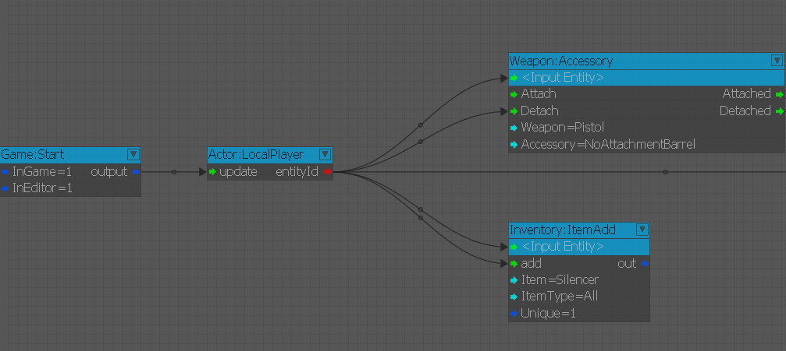
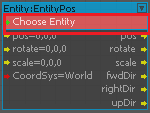
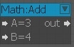

Overview
Flow Graph is a visual scripting system embedded within the CRYENGINE Sandbox Editor. The main advantage of the Flow Graph Editor is that users do not require any scripting or programming knowledge.
Simple and complex logic can be built with a few clicks and without requiring any knowledge of scripting or coding. A large library of nodes allows the user to fully control the entities and AI in a level.
In addition to being the main tool used for creating mission logic in single-player levels, the Flow Graph can also be used to create prototype gameplay, effects, and sound design. Levels can have multiple graphs that performs different tasks simultaneously.
Use Overview
In Flow Graph, each node is a logical element (Flow Component) where each component has an arbitrary number of typed inputs and outputs. All inputs (except Events and any) contain default port values that can be modified using the Flow Graph Editor and these input ports also serve as component properties.
When the component receives a value on a given input, the input gets activated. This method checks the ports that are actually activated, and retrieves the value of the input port and performs the specific action of the node (For example, Math:Mul node multiplies the input value with the multiplier specified in the node).
A component can also activate the output, if the output is connected to the input port of another component. It immediately transmits the link and activates the input port of the next component.
The output of any flow component can be connected to the input of another flow component using a directed link. The outputs and inputs are classified based on the data types, and they can be of any one of the following, (also color coded for your convenience)
Type | Color |
|---|---|
Boolean value (Bools) | Blue |
Floating-point values (Floats) | White |
Integer | Red |
String | Turquoise |
Vector (vec3) | Yellow |
When the output of one type is connected to input of another type, the reasonable type conversion on the output value is applied when it is transmitted.
There is a set of entity components (one per each entity class type) that exposes the entity functionality (its events). Such components can be added in the editor from the selected entities, and they internally contain an EntityId of the entity to which they linked.
The Flow Graph uses nodes to represent entities or behaviors that can be controlled by linking them to other nodes. Nodes can be interconnected by links:

The Flow Graph logic is stored in the XML format and can be easily exported to be used in the other levels. Since a graph is always created and stored on a specific entity, the graph also gets exported along with the object. Layers are fully supported in the Flow Graph system.
Terminology
Term | Description |
|---|---|
Graph | A single Flow Graph is referred to as a graph. |
Nodes | Nodes are the representation of entities (Entity node) or components (Component node) that perform certain operations. |
Component Node | A component node does not represent an actual entity from the level, but performs a specific action. Component nodes can have a target entity set, on which they can operate (For example, Entity:EntityPos).   |
Entity Node | Entity nodes represent the entities in the level. The input and output ports depend on the ports defined within the entity. You can select an entity in the viewport, and in the Flow Graph editor, right-click and select Add Selected Entity to add the selected entity to the graph. |
Links | Links are used to connect the nodes. They are visualized as lines are drawn between the ports of connected nodes. |
Ports | Nodes have input and output ports. These ports are used as a connection between nodes. Ports are visualized as colored arrows on both sides of the node. |
Graph Entity | An entity that contains a graph is referred to as a graph entity. |